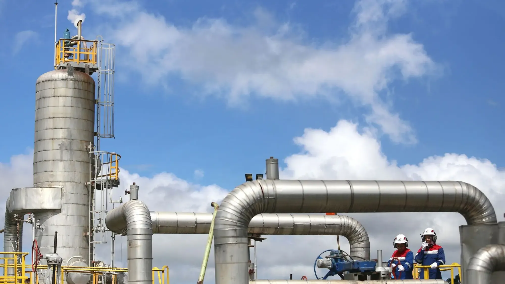

Process areas in view. Pumps and compressors understood.
In oil and gas, the same site holds restricted process areas and rotating equipment that wears over time. Video AI and equipment sensors help your team notice what needs attention sooner.
Many assets. Few warning signs you can see.
Process equipment and the systems around it create signals that can help teams investigate developing mechanical and performance issues. Most of them never reach a person until something fails or a round is walked.
The practical question is which areas and which assets deserve closer attention, and how a change gets from a camera or a sensor to the engineer who can judge it.
Recognise entry into designated process areas.
Monitor configured equipment enclosures and restricted zones, or identify activity outside an agreed operating schedule. Cameras already on site are the starting point, and each event goes to the contact you name.
- Entry into a designated process area
- Activity near equipment outside an agreed schedule
- Presence in an enclosure that should be clear
Investigate changing pump and compressor behaviour.
Connect vibration, electrical readings and process pressure to identify deviations and assess possible developing equipment faults. Observations support investigation by your maintenance engineers; they do not replace it.
Relevant inputs
- Vibration
- Current
- Temperature
- Suction and discharge pressure
Representative assets
- Process pumps
- Compressors
- Motors
- Heat exchangers
Connected plant needs a clear view of what is connected.
Pumps, compressors and the cameras watching them sit on operational networks. Before adding monitoring, it helps to know which assets exist, who can reach them from outside, and how the networks are separated.
- 01
Asset visibility
A current list of the controllers, sensors and gateways that monitoring will touch.
- 02
Remote and vendor access
Who can reach process equipment from outside the site, and how that access is controlled.
- 03
Segmentation
Keeping monitoring traffic apart from the networks that run the process.
Start with one area. Or one asset that matters.
- 01
01
Understand
Pick the process area or the pump or compressor train, and list the cameras and sensors that already exist.
- 02
02
Develop
Set the area rules or the sensor baselines, and decide who is notified.
- 03
03
Validate
Run the application against agreed scenarios with your operations and maintenance team.
- 04
04
Deploy
Connect alerts to the dashboard and the channels your team uses, then refine.
A typical first project is one train or one area.
A first project in oil and gas is deliberately narrow: one pump or compressor train, or one process area, so the result can be judged against something your team already knows well.
- 01
Scope
One rotating-equipment train, or one designated process area covered by cameras that are already installed. Not the whole site.
- 02
Data to start with
Vibration, motor current, temperature and suction and discharge pressure where they are already logged, plus a few weeks of history if it exists. For an area, a view from the existing camera.
- 03
Who is involved
A maintenance or reliability engineer who knows the asset, an operations contact for the area, and someone from IT or OT who can say what may be connected.
- 04
A successful evaluation
The analysis flags deviations your engineers recognise from past events, alerts reach the named contact, and false alarms are low enough that the team would keep it switched on.
How can AI help an oil and gas operation?
It can watch designated process areas through existing cameras, analyse pump and compressor signals such as vibration, current and suction and discharge pressure for developing faults, and review how plant networks and vendor access are secured. This page covers all three together; camera-only safety work such as PPE and exclusion zones is on the Video AI energy page.
Common questions about oil & gas
Which areas of an oil and gas site can video AI watch?
Any area a camera already covers and your team defines: equipment enclosures, designated process areas and restricted zones. You choose the zone, the schedule and who is notified when a configured event occurs.
Do we need new cameras?
Not necessarily. The starting point is the cameras already in place. Whether they suit the task depends on their position, lighting and the event you want to recognise, and we check that with your team before anything is deployed.
What sensor data helps with pumps and compressors?
Typically vibration, motor current, temperature and suction or discharge pressure. The mix depends on the asset and on what is already measured. Analysing the readings together is what surfaces deviations a single reading would hide.
Does it diagnose faults for us?
It flags deviations from expected behaviour and assesses which developing faults the pattern may be consistent with. Your maintenance engineers review the supporting observations and decide what to do. Interpretation depends on equipment design and available measurements.
How does this fit with our OT network and vendor access?
Monitoring is configured around your infrastructure, with on-site, cloud or hybrid deployment. We look at asset visibility, remote and vendor access and segmentation as part of scoping, and we do not claim any compliance outcome.
What is a sensible first step?
One area or one asset. Tell us which restricted zone or which pump train worries you most, and what data exists. We shape a demonstration around that application and agree how it will be assessed.
Tell us which area or asset matters. We will shape a demonstration around it.
Illustrative applications, not customer deployment claims.